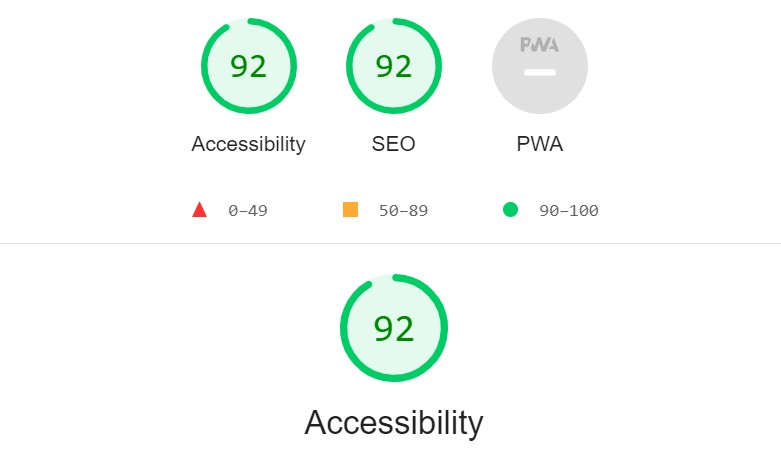

uu analyse fra webain
fgkjopjuiiohoøuhøuhugtgyhujikfghjk
| webaim analyse | lighthouse analysering | gpt chat |
|---|---|---|

Disse første bildene er fra index siden min Ved å trykke på details fikk jeg rød tegn på disse områdene i header og footer. I header for eksempel skal hvert bilde må ha et alt-attributt. Uten alternativ tekst vil innholdet i et bilde ikke være tilgjengelig for brukere av skjermlesere eller når bildet er utilgjengelig. I footer fikk jeg contrast error som sa noe om Svært lav kontrast mellom tekst og bakgrunnsfarger. ettersom tilstrekkelig kontrast av tekst er nødvendig for alle brukere, spesielt brukere med nedsatt syn. På dette bilde viser den 4 Alert som forteller noe om Varsler Mangler overskrift på første nivå Hva det betyr En side har ikke en overskrift på første nivå. Hvorfor det er viktig Overskrifter forenkler sidenavigering for brukere av mange hjelpeteknologier. De gir og så semantisk og visuell mening og struktur til dokumentet. En overskrift () på første nivå skal finnes på nesten alle sider. Den skal inneholde den viktigste overskriften på siden (vanligvis dokumenttittelen). jeg fikk også 3 andre varsler som sa noe om overflødig kobling. Når tilstøtende lenker går til samme sted (for eksempel et koblet produktbilde og et tilstøtende koblet produktnavn som går til samme produktside), resulterer dette i ekstra navigering og repetisjon for brukere av tastatur og skjermleser. Dette bilde sier noe om strukturelle elementer som jeg har inn på seksjonene mine inn på main. Overskrifter letter sidenavigering for brukere av hjelpemidler. De gir også semantisk og visuell mening og struktur til dokumentet. Analysen ber meg om å sørg for at den aktuelle teksten virkelig er en overskrift og at den er strukturert riktig i sidekonturen. Disse som kommer nå er bilder fra min produktside På produkt siden min som på index siden min får jeg disse røde tegne som påpeker igjen den dårlige kontrasketn mellom valg av farger, overflødig kobling og Manglende skjemaetikett Hva det betyr En skjemakontroll har ikke en tilsvarende etikett. Hvorfor det betyr noe Hvis en skjemakontroll ikke har en riktig tilknyttet tekstetikett, kan det hende at funksjonen eller formålet med den skjemakontrollen ikke presenteres for skjermleserbrukere. Skjemaetiketter gir også synlige beskrivelser og større klikkbare mål for skjemakontroller. |

I denne kolonen har jeg brukt highlighing på indexsiden min og fikk dermed de poengene som har kommet opp. Jeg kryssa på navigation når jeg tok testene På accessiblillys har jeg fått noen varsler, nemlig atjeg mangler tag som fortellernoe om bilde og dette er i menyen. ppppsss... denne punkten kom ikke med når jeg brukte webaim. det røde varlselet om dårlig kontrass mellom skrift og bakgrunn på footer kommer opp her også 
På seo får jeg rød tegn som seier at dokumentet har ikke en metabeskrivelse Metabeskrivelser kan inkluderes i søkeresultater for å konsist oppsummere sideinnhold. Angir ikke en temafarge for adressefeltet. Feil: Ingen manifest ble hentet. accessiblillys på produktsiden får jeg et rødt elemnt som forteller om forteller om dårlig/lav bildekontrast som tidligere nevnt gjør det vanskelig eller umulig for med dårlig syn å lese. 
Dokumentet har ikke en metabeskrivelse Metabeskrivelser kan inkluderes i søkeresultater for å konsist oppsummere sideinnhold. dette bilde er min valgfrie side og samme varselet kommer opp her også grunnet bruk av samme footer på alle 3 sidene. en annen feil som blir påpeket her feil i kodingen ved input av brukernavn hvor jeg har skrevet navn i kolonen der bruker skal skrive sitt navn |
"#" |
|
Beskrivelse 4 |
Beskrivelse 5 |

Beskrivelse 6 |